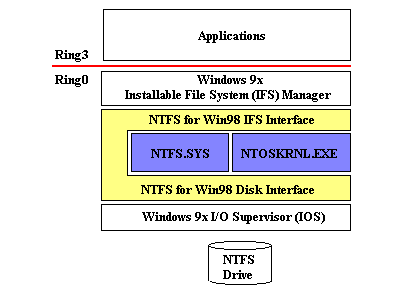
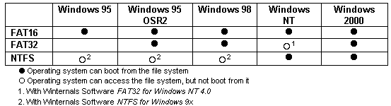

NTFS for Windows 98 is a NTFS file system driver for Windows 95 and Windows 98. Once installed, any NTFS drives present on your system will be fully accessible as native Windows 98 volumes. This version provides read-only capabilities.
Please read this entire file before contacting us for help.
NTFS for Windows 98 takes a unique approach to providing cross-platform file system support. Rather than implement code to read and write NTFS drives, NTFS for Windows 98 uses the NTFS and NTOSKRNL system files from a Windows NT/2000/XP configuration. NTFS for Windows 98 wraps the Windows NT/2000/XP NTFS driver in a run-time environment that simulates the Windows NT environment the NTFS driver is written to use. Thus, NTFS for Windows 98 does not rely on potentially unreliable reverse-engineered information about NTFS, provides ultimate compatibility with NTFS, and takes advantage of Microsoft NTFS bug fixes whenever you update the NTFS driver file NTFS for Windows 98 uses to a more recent version.
The picture above depicts NTFS for Windows 98's relationship with NTFS, NTOSKRNL and the Windows 95/98 file system. NTFS for Windows 98 provides an external interface that looks like a standard Windows 95/98 file system, while internally it presents an interface to NTFS that looks like the Windows NT/2000/XP environment. NTFS for Windows 98 uses a number of services within NTOSKRNL to help implement this environment. Note that NTFS for Windows 98 does not load NTFS or NTOSKRNL unless you have at least one NTFS drive on your system.
This version of NTFS for Windows 98 is read-only. NTFS for Windows 98 has been tested to work with the following versions of NTFS:
NTFS for Windows 98 works on the following versions of Windows:
Because the Windows 95/98 environment is different than that of Windows NT/2000/XP, the level of NTFS support that NTFS for Windows 98 provides is not equivalent to that provided on Windows NT/2000/XP. For example, NTFS for Windows 98 does not enforce the Windows NT/2000 security model. All files and directories are accessible, regardless of their security permissions settings. In addition, NTFS for Windows 98 is not compatible with Windows 2000's Encrypting file System (EFS). Any files encrypted using EFS will not be accessible under Windows 98 using NTFS for Windows 98.
Do not convert your first partition, or your Windows 95/98 boot partition (the one with \windows on it), to NTFS as there is no support in Windows 95 or Windows 98 for reading NTFS drives during the boot sequence.
For maximum compatibility in dual boot systems, the recommended partition configuration is to maintain a FAT partition as the first partition on the primary drive. This partition should contain Windows 95/98 and should not be used to store applications or data files. The rest of the primary disks, and any other disks that you wish to share between Windows 98 and Windows NT/2000/XP can be formatted with NTFS or other file system types (FAT16 or FAT32) that are understood by the operating systems from which you wish to access them. Your Windows NT/2000/XP system directory can be placed on either a FAT or NTFS drive (note that Windows NT 4.0 cannot be placed on a FAT32 drive, nor boot from a FAT32 drive).
Below is a file system compatibility chart that can help you determine which file systems to use for compatibility in your dual boot environment.
Before you run the NTFS for Windows 98 installation program, you must have access to a number of files (listed below) from the Windows NT/2000/XP installation you use to access your NTFS drives. This means that if the files are located on a NTFS drive you will have to copy them to a FAT drive accessible from Windows 98.
During the NTFS for Windows 98 setup procedure you will be prompted for the location of these files. You may specify either the system directory of a Windows NT/2000/XP installation (e.g. c:\winnt), or a directory into which you've copied the necessary files. The files that you must make available to NTFS for Windows 98 are:
<winnt> designates the system directory of the Windows NT/2000/XP installation that contains the NTFS driver you normally use to access your NTFS drives.
The setup procedure allows you to assign drive letters to NTFS drives that NTFS for Windows 98 mounts. Simply enter a string in the drive-letter selection entry that designates, in order, the drive letters for NTFS for Windows 98 to assign. For example, if you want the first NTFS drive mounted to have a drive letter of 'D' and the second to have a drive letter of 'T', you would enter "dt" (without the quotation marks). Note that the entry is case-insensitive. Leaving the entry blank has NTFS for Windows 98 assign the first available drive letter to each mounted NTFS drive.
After the setup procedure is complete you are prompted to reboot your computer. The next time you boot the Windows 95 or 98 system on which you installed NTFS for Windows 98 you will have access to your computer's NTFS volumes. You may rerun the configuration utility at any time to select different drive letters or a different NTFS file.
NTFS for Windows 98 includes a scandisk for NTFS drives named NTFSCHK. In the same way that NTFS for Windows 98 creates an NT-like environment for the NTFS driver, NTFSCHK creates an NT-like environment for the AUTOCHK.EXE (chkdsk) program of a Windows NT/2000/XP installation. The files that make up this environment include AUTOCHK.EXE, NTDLL.DLL, and three character mapping files, C_437.NLS, C_1252.NLS, and L_INTL.NLS.
The NTFS for Windows 98 setup program adds the execution of NTFSCHK to your AUTOEXEC.BAT file so that the consistency of your NTFS drives is checked every time you boot into Windows 95/98. You may also run NTFSCHK from DOS before Windows 95/98 starts, from a DOS-box command prompt, or by selecting the NTFSCHK icon in the NTFS for Windows 98 program group in the Start menu.
In some cases NTFSCHK will indicate that it cannot lock the specified drive(s). This condition results when applications or Windows has active handles to open files on the NTFS drive for which NTFSCHK reports the condition. If the applications in question do not close their handles, or Windows keeps open handles, you must reboot the computer and run NTFSCHK before the drive is accessed by applications or Windows, or reboot into Windows NT/2000/XP and perform a chkdsk operation there.
While NTFSCHK scans a drive that drive will not be accessible. If you click on the drive icon in Explorer you will receive an "access denied" error message. If Explorer is opened to directories on a drive being checked and you attempt to navigate the directories you will receive errors indicating that the directories do not exist.
NTFSCHK's command-line usage is as follows (selecting the NTFSCHK program icon results in a check of all the computer's NTFS drives):
ntfschk [/s] [/f] [/q] [ drive letter: | * ]